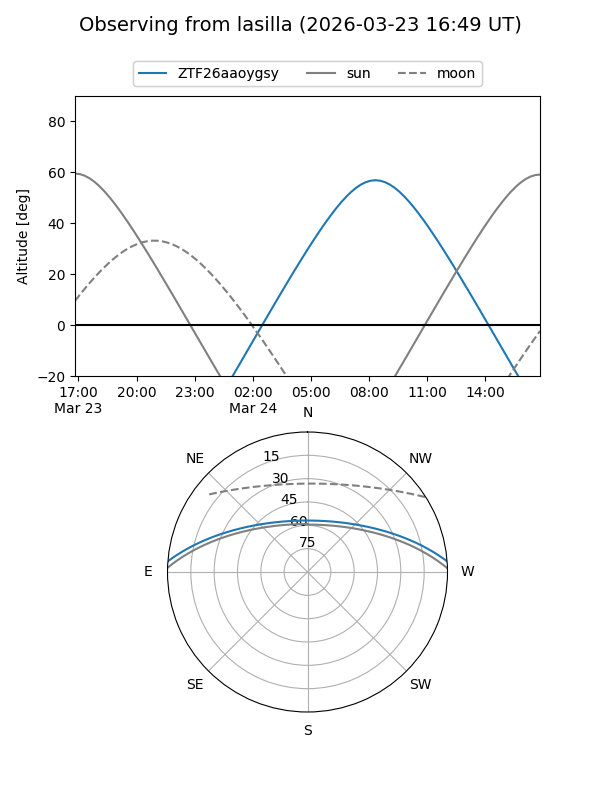
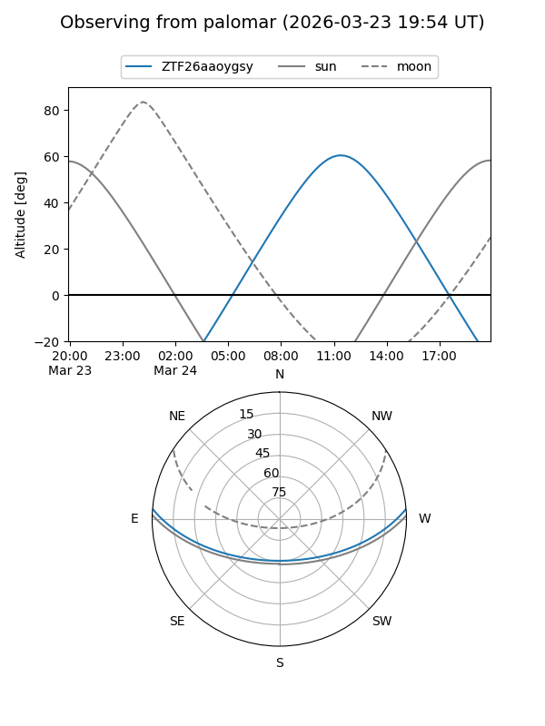

ZTF26aaoygsy
Target ZTF26aaoygsy at 2026-03-23 13:09
Aliases and brokers:
FINK: link
Lasair: link
ALeRCE: link
alt names
ZTF26aaoygsy (ztf,fink_ztf)
Coordinates:
equatorial (ra, dec) = 235.6376,+3.91602
equatorial (HMS+DMS) = 15:42:33.02,+03:54:57.65
galactic (l, b) = (10.9780,+43.06735)
Flags:
Photometry:
last ztfg=18.57
1 ztfg detections
Lightcurve
Visibility


Additional plots